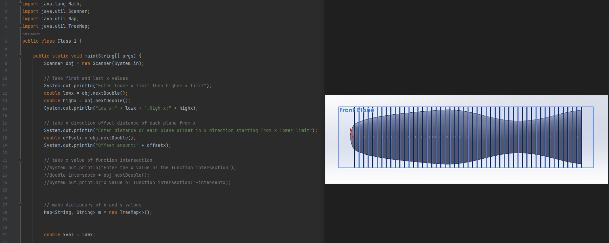

Java calculator to generate mathematical function splines in Solidworks
I had to design the handles for my static umbalance demonstration rotor project. I thought it would be interesting to use mathematical functions to generate its shape in Solidworks. I found two functions using a graphing calculator that looked like a comfortable ergonomic design that would fit in a hand like a screwdriver would. I then made a Java program that would print out values of different hights along the two curves at certain intervals. I then used these numbers as the radii to draw each circle in Solidworks along the length of the handle, then used the loft tool on each one to create the final product. The functions used in the calculator can easily be adjusted by editing the code. I think this is a very useful tool that will help me on more than one occasion.